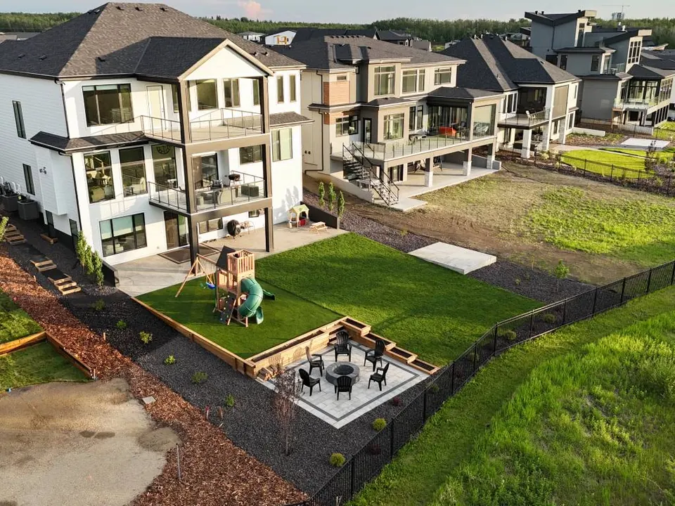

Home/Our work
Real yards. Real Edmonton.
67 photos of our own work: no stock images. Tap any photo to see it larger.
Free estimate
Let's walk your yard.
Three quick steps. We'll come out, measure, talk through ideas and give you a written estimate. No cost, no pressure.
- On-site visit and written estimate, free
- 2-year workmanship coverage on hardscapes, 1 year on turf and plants
- Financing available through Financeit
780-940-8283
Rather talk? Phones are answered 9 am – 5 pm, 7 days a week.